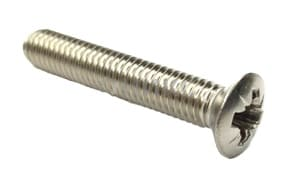

Винт DIN 966 с полупотайной головкой с крестообразныv шлицем PZ
Стандарт
DIN 966
Цена от
0,73 ₽
Размерный ряд
от М2.5 до М8
Винты » Винты DIN » DIN 966 Винты с полупотайной головкой со шлицем PZ
Варианты и размеры (21)
| Наименование | Размер | Длина, мм | Материал | Покрытие | Цена |
|---|---|---|---|---|---|
| Винт DIN 966 с полупотайной головкой с крестообразныv шлицем PZ L=10мм | 10 | 0,60 ₽ | |||
| Винт DIN 966 с полупотайной головкой с крестообразныv шлицем PZ L=12мм | 12 | 0,62 ₽ | |||
| Винт DIN 966 с полупотайной головкой с крестообразныv шлицем PZ L=14мм | 14 | 0,64 ₽ | |||
| Винт DIN 966 с полупотайной головкой с крестообразныv шлицем PZ L=16мм | 16 | 0,66 ₽ | |||
| Винт DIN 966 с полупотайной головкой с крестообразныv шлицем PZ L=18мм | 18 | 0,68 ₽ | |||
| Винт DIN 966 с полупотайной головкой с крестообразныv шлицем PZ L=20мм | 20 | 0,69 ₽ | |||
| Винт DIN 966 с полупотайной головкой с крестообразныv шлицем PZ L=22мм | 22 | 0,71 ₽ | |||
| Винт DIN 966 с полупотайной головкой с крестообразныv шлицем PZ L=25мм | 25 | 0,74 ₽ | |||
| Винт DIN 966 с полупотайной головкой с крестообразныv шлицем PZ L=30мм | 30 | 0,78 ₽ | |||
| Винт DIN 966 с полупотайной головкой с крестообразныv шлицем PZ L=35мм | 35 | 0,83 ₽ | |||
| Винт DIN 966 с полупотайной головкой с крестообразныv шлицем PZ L=3мм | 3 | 0,54 ₽ | |||
| Винт DIN 966 с полупотайной головкой с крестообразныv шлицем PZ L=40мм | 40 | 0,88 ₽ | |||
| Винт DIN 966 с полупотайной головкой с крестообразныv шлицем PZ L=45мм | 45 | 0,92 ₽ | |||
| Винт DIN 966 с полупотайной головкой с крестообразныv шлицем PZ L=4мм | 4 | 0,55 ₽ | |||
| Винт DIN 966 с полупотайной головкой с крестообразныv шлицем PZ L=50мм | 50 | 0,97 ₽ | |||
| Винт DIN 966 с полупотайной головкой с крестообразныv шлицем PZ L=55мм | 55 | 1,00 ₽ | |||
| Винт DIN 966 с полупотайной головкой с крестообразныv шлицем PZ L=5мм | 5 | 0,56 ₽ | |||
| Винт DIN 966 с полупотайной головкой с крестообразныv шлицем PZ L=60мм | 60 | 1,10 ₽ | |||
| Винт DIN 966 с полупотайной головкой с крестообразныv шлицем PZ L=6мм | 6 | 0,57 ₽ | |||
| Винт DIN 966 с полупотайной головкой с крестообразныv шлицем PZ L=8мм | 8 | 0,58 ₽ | |||
| Винт DIN 966 с полупотайной головкой с крестообразныv шлицем PZ M2.5 | M2.5 | 0,62 ₽ |